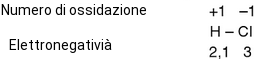
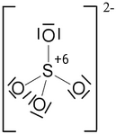
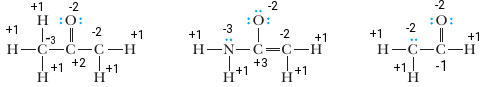

Oxidation number
La capacità di un certo elemento di reagire formando composti è nota come valenza ed è data dal numero di legami che l'elemento è in grado di formare. Ad esempio nell'H2O l'ossigeno ha valenza 2 mentre l'idrogeno ha valenza 1. Al concettto di valenza è subentrato quello di numero di ossidazione. Il numero di ossidazione, (o stato di ossidazione) di un atomo legato ad altri atomi, corrisponde al numero di cariche che questo acquisterebbe se al momento della rottura del legame covalente, gli elettroni di legame venissero assegnati all'atomo più elettronegativo. Facciamo un esempio considerando la molecolare di HCl:
Nel caso in cui il legame covalente della molecola di HCl dovesse rompersi è il cloro, atomo più elettronegativo a prendere gli elettroni di legame assumento la carica -1, mentre l'idrogeno perderebbe una carica negativa assundo la carica formale +1.
Nelle molecole omonucleari biatomiche come Cl2, H2, l'elettrogenatività degli atomi è la stessa e il numero di ossidazione è zero. Così come anche in S8, O3, P4, ecc.
Il numero di ossidazione degli elementi allo stato elementare metallico come Ca, Na, Li, ecc hanno tutti numero di ossidazione 0.
Vediamo altri esempi di attribuzione del numero di ossidazione in molecole organiche:
Il numero di ossidazione dell'idrogeno H, è uguale a +1 quando questo è legato ad atomi più elettronegativi come nel caso di CH4 o H2, HCl; è invece pari a -1 quando H è legato ad atomi meno elettronegativi come in NaH e CaH2.
Il numero di ossidazione degli elementi dei gruppi IA e IIA è semmpre uguale rispettivamente a +1 e +2 tranne quando questi si trovano allo stato elementare.
Il numero di ossidazzione dell'ossigeno O, oltre ad essere 0 in O2 e O3, è sempre uguale a -2 in tutti gli ossidi e idrossidi; Nei perossidi come H2O2, BaO2, ecc è pari a -1; Nei superossidi come KO2, NaO2 è uguale a -1/2; Infine è uguale a +2 nell'unico composto F2O in cui il fluoro ha elettrogenatività maggiore di O.
La somma dei numeri di ossidazione di un composto neutro è 0, mentre è uguale alla carica in uno ione, ad esempio nello nello ione solfato lo zolfo ha numero di ossidazione +6, mentre gli ossigeno come al solito -2
La somma dei numeri di ossidazione è dunque uguale alla carica -2. Mentre la somma dei n.o. è nulla per le molecole neutre come le seguenti:
Formal charge
This is in contrast to the Formal Charge which divides each bonding pair equally without concern for which atom may be more electronegative. The Formal Charges on all atoms in a molecule must sum to zero;